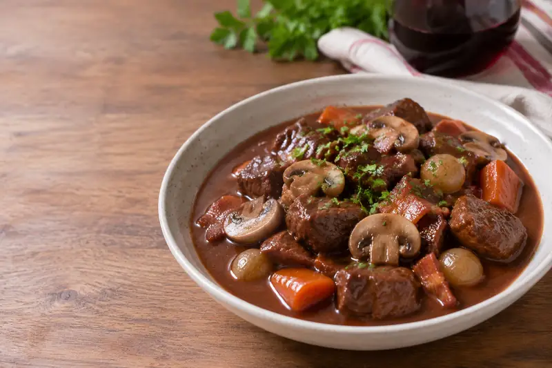
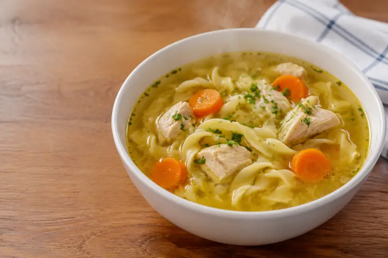

Eggs and dairy蛋奶
Butter黄油
commonly stocked (not seen in this sample)Costco 常见（本次未见）
At Costco在 Costco
Typical pack常见规格: varies (Kirkland butter packs are common; not seen in this sample)不定（Kirkland 黄油通常有；本次样本未见）
Price varies; check the warehouse or costco.ca.价格随时变化，请看仓库或 costco.ca。
Sample date取样日期 2026-11-16. Availability varies by warehouse and season; this is not a stock guarantee.有无因门店和季节而异，不是库存保证。
Store and portion储存与分装
Refrigerate per the package date; rewrap cheese after cutting, and discard soft cheese that has mould.按包装日期冷藏；奶酪切开后包好，表面有霉点的软奶酪整块丢掉。
Cut big blocks of cheese into portions and freeze them for cooking (melting), not for the cheese board.大包奶酪切块后分袋冷冻，只适合之后用来烹饪（融化）。
Per 100 g (Canadian Nutrient File)每 100 克（加拿大营养素数据库）
Butter, regular · code 118
717 kcal · protein蛋白 0.85 g · fat脂肪 81.11 g · carbs碳水 0.06 g · fibre纤维 0 g · sodium钠 643 mg
Milk牛奶
Recipes with this用到它的菜

Beef Bourguignon法式红酒炖牛肉225 min分钟 · 4 servings份 · French法 Harbin-style Borscht with Beef and Cabbage罗宋汤（哈尔滨红汤）120 min分钟 · 6 servings份 · Northeastern Chinese东北
Harbin-style Borscht with Beef and Cabbage罗宋汤（哈尔滨红汤）120 min分钟 · 6 servings份 · Northeastern Chinese东北
Chicken Noodle Soup美式鸡肉蔬菜面汤50 min分钟 · 6 servings份 · Western西式New England Clam Chowder新英格兰蛤蜊汤60 min分钟 · 4 servings份 · Western西式 Hong Kong Egg Tarts港式蛋挞77 min分钟 · 6 servings份 · Cantonese粤
Hong Kong Egg Tarts港式蛋挞77 min分钟 · 6 servings份 · Cantonese粤 Japanese Chicken Curry日式咖喱鸡90 min分钟 · 4 servings份 · Japanese日Classic Lasagna千层面120 min分钟 · 6 servings份 · Italian意
Japanese Chicken Curry日式咖喱鸡90 min分钟 · 4 servings份 · Japanese日Classic Lasagna千层面120 min分钟 · 6 servings份 · Italian意 Lemon Butter Baked Cod柠檬黄油烤鳕鱼22 min分钟 · 2 servings份 · Western西式Baked Mac and Cheese烤芝士通心粉65 min分钟 · 4 servings份 · Western西式Moussaka希腊茄子肉酱千层145 min分钟 · 6 servings份 · Greek / Mediterranean希腊/地中海Pan-Seared Salmon with Soy Butter酱油黄油煎三文鱼15 min分钟 · 2 servings份 · Chinese home-style家常
Lemon Butter Baked Cod柠檬黄油烤鳕鱼22 min分钟 · 2 servings份 · Western西式Baked Mac and Cheese烤芝士通心粉65 min分钟 · 4 servings份 · Western西式Moussaka希腊茄子肉酱千层145 min分钟 · 6 servings份 · Greek / Mediterranean希腊/地中海Pan-Seared Salmon with Soy Butter酱油黄油煎三文鱼15 min分钟 · 2 servings份 · Chinese home-style家常 Pan-Seared Butter-Basted Steak平底锅牛排（黄油淋煎）67 min分钟 · 2 servings份 · Western西式Buttermilk Pancakes美式松饼30 min分钟 · 4 servings份 · Western西式Black Pepper Beef Rice Bowl黑椒牛肉饭30 min分钟 · 2 servings份 · Chinese home-style家常Quiche Lorraine洛林咸派125 min分钟 · 6 servings份 · French法Mushroom Risotto蘑菇烩饭45 min分钟 · 4 servings份 · Italian意
Pan-Seared Butter-Basted Steak平底锅牛排（黄油淋煎）67 min分钟 · 2 servings份 · Western西式Buttermilk Pancakes美式松饼30 min分钟 · 4 servings份 · Western西式Black Pepper Beef Rice Bowl黑椒牛肉饭30 min分钟 · 2 servings份 · Chinese home-style家常Quiche Lorraine洛林咸派125 min分钟 · 6 servings份 · French法Mushroom Risotto蘑菇烩饭45 min分钟 · 4 servings份 · Italian意 Roast Chicken with Root Vegetables烤全鸡（西式，配根茎蔬菜）170 min分钟 · 4 servings份 · Western西式
Roast Chicken with Root Vegetables烤全鸡（西式，配根茎蔬菜）170 min分钟 · 4 servings份 · Western西式 Rosemary Garlic Lamb Chops迷迭香煎羊排37 min分钟 · 2 servings份 · Western西式
Rosemary Garlic Lamb Chops迷迭香煎羊排37 min分钟 · 2 servings份 · Western西式 Salmon Chowder三文鱼土豆浓汤45 min分钟 · 6 servings份 · Western西式Shepherd's Pie牧羊人派105 min分钟 · 6 servings份 · Western西式
Salmon Chowder三文鱼土豆浓汤45 min分钟 · 6 servings份 · Western西式Shepherd's Pie牧羊人派105 min分钟 · 6 servings份 · Western西式 Shrimp Scampi Pasta蒜香黄油虾意面25 min分钟 · 3 servings份 · Italian意
Shrimp Scampi Pasta蒜香黄油虾意面25 min分钟 · 3 servings份 · Italian意 Spaghetti with Bolognese Ragu意式番茄肉酱面（博洛尼亚肉酱）175 min分钟 · 4 servings份 · Italian意Roast Turkey烤火鸡240 min分钟 · 8 servings份 · Western西式
Spaghetti with Bolognese Ragu意式番茄肉酱面（博洛尼亚肉酱）175 min分钟 · 4 servings份 · Italian意Roast Turkey烤火鸡240 min分钟 · 8 servings份 · Western西式